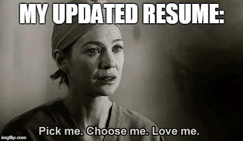

PHAM VO NGOC HAN

I value respect, collaboration, and bringing a friendly attitude to any team I am
part of.
Education
Bachelor of Science, Information System - University of Texas at Arlington (2023-2025)
Work Experience
Mathematics Tutor - Tarrant County College | Tarrant County College
June 2022 – May 2023
- Utilized positive reinforcement techniques to encourage and motivate students.
- Reviewed class material with students by discussing text, and working solutions to problems.
- Coordinated with management and professors to create study groups to enhance student learning and increase comprehension levels of material.
Undergraduate Research Opportunity Program (UROP) Researcher | The University of Texas at Arlington
Skills
- Schedule management, team-work skill.
- Math skills assessments, Microsoft office.
- Interpersonal Communication, positive and professional.
Activities & Leadership
- Developed software to check level of depression and performed 1st prize in An Giang-VN province out of more than 200 competitors with The Scientific Research Awards 2018
- Conducted volunteer at family doctor office to help new patients about paperwork and volunteer in International Club to deliver food and clothes for unlucky people for 6 months.
- Presented in Deans' List 4 semester 2021-2022.
- Evaluated as a potential member PHI THETA KAPPA club since 2022.
Other
Contact Me